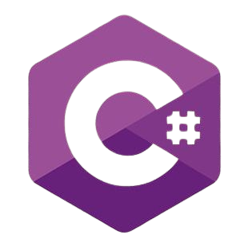
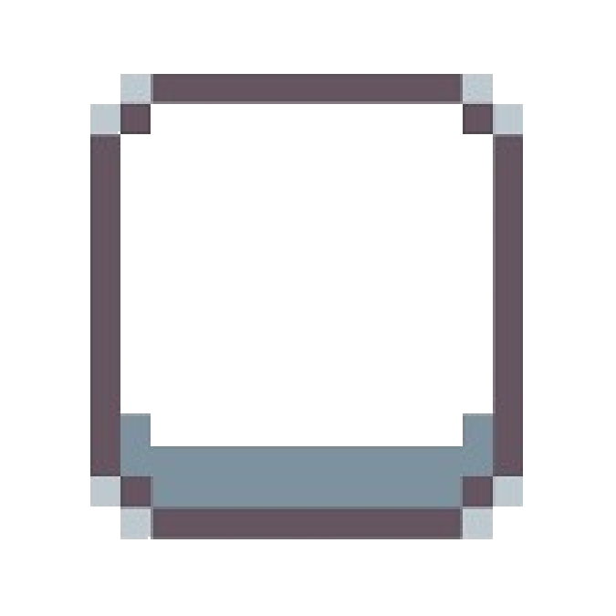
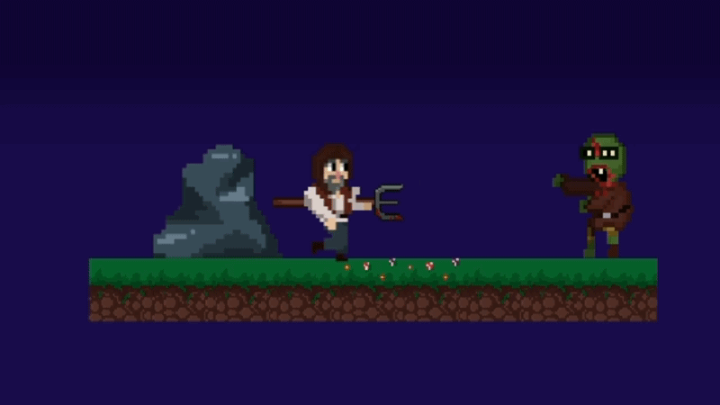
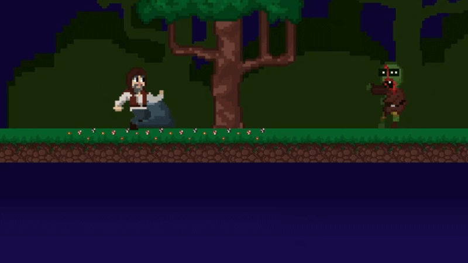
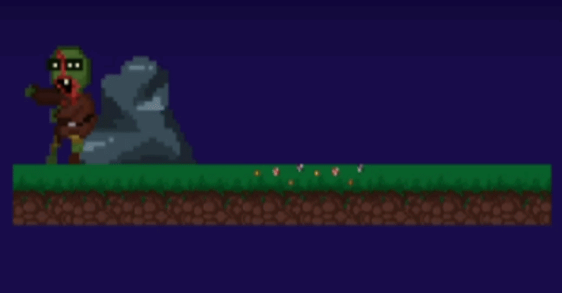
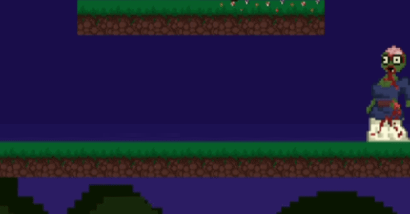
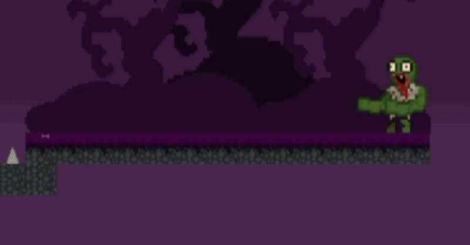

Zombie in the Village

"Zombie in the Village" fue el primer proyecto que desarrollé durante el ciclo en la Universidad, donde participé como programador. Se realizó en un entorno colaborativo, aplicando los fundamentos del desarrollo de videojuegos a partir de una idea base que fue evolucionando progresivamente hasta convertirse en un producto completamente funcional.



Ataque meele
Ataque DisparoSe desarrollaron dos tipos de ataque: cuerpo a cuerpo con un trinche y ataque a distancia. Ambos comparten la misma logica de codigo de proyectiles. En el caso del ataque melee, se utiliza un proyectil (trinche) con tiempo de vida muy corto y alcance limitado para simular un impacto inmediato. El ataque a distancia dispara un proyectil estándar que se desplaza hacia el objetivo y aplica daño al detectar colisión.
void Shoot()
{
if (Input.GetKeyDown(KeyCode.X) && ammo >= 1)
{
GameObject obj = Instantiate(bulletPrefab, transform.position, Quaternion.identity);
ammo--;
}
}

Enemigo 1
Enemigo 2
Enemigo 3Se programó el comportamiento básico de los enemigos, centrado en el patrullaje a lo largo de todas las zonas por las que avanza el jugador. Inicialmente se planteó implementar persecución directa, pero se descartó debido a que el jugador solo cuenta con una vida y podía generar una experiencia frustrante. En su lugar, se optó por un sistema más equilibrado basado en recorridos predefinidos.